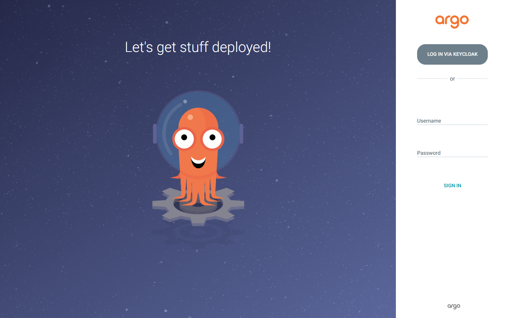
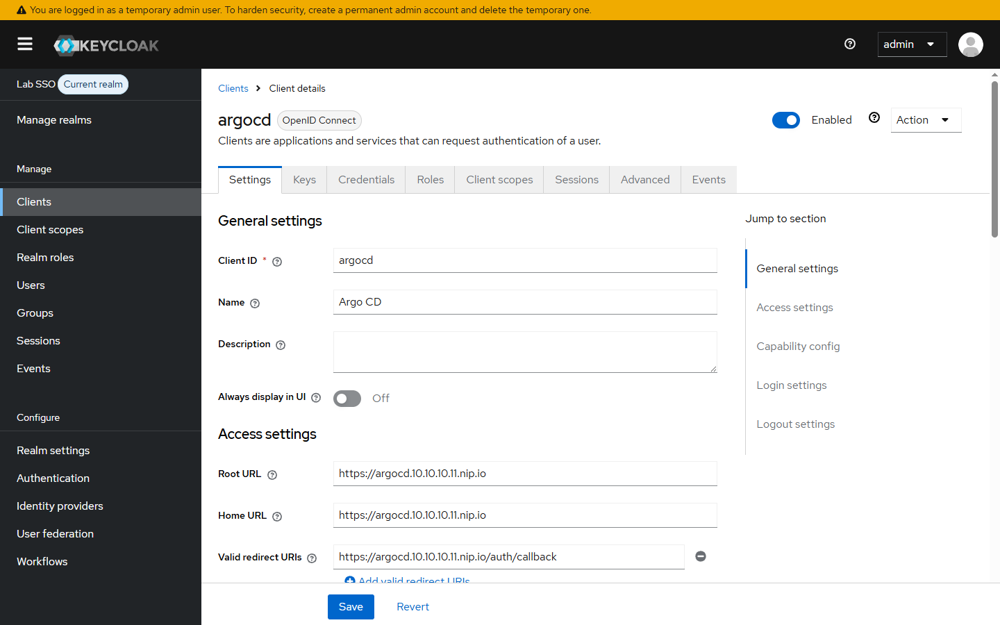
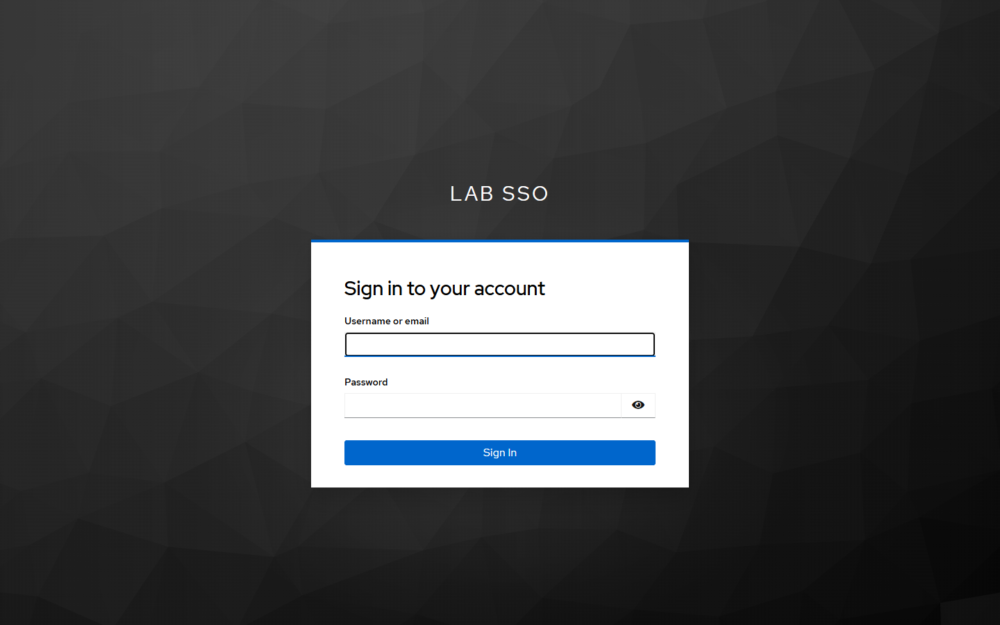
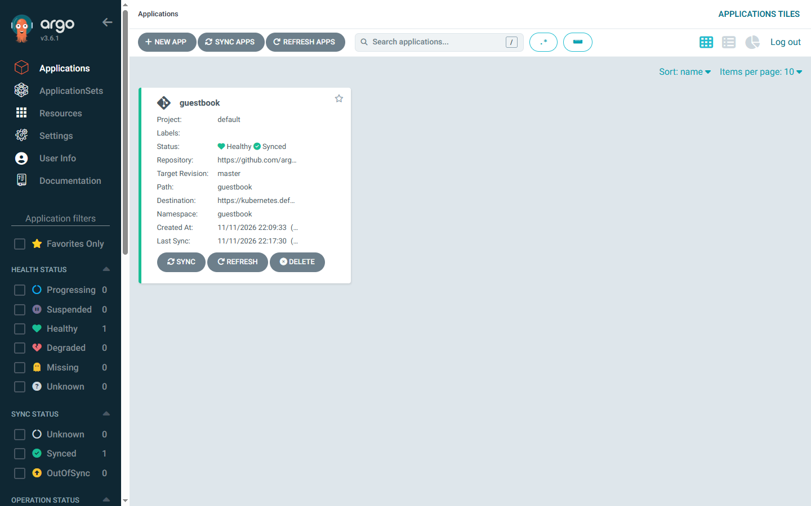
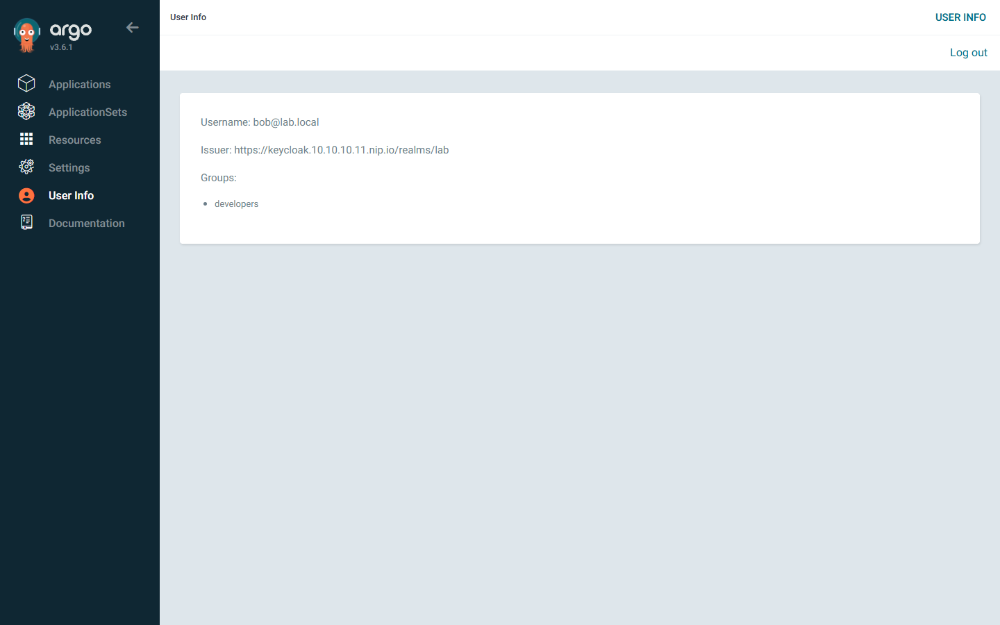
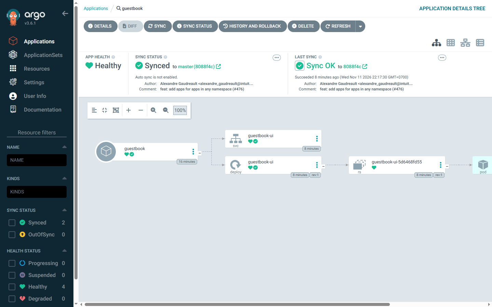
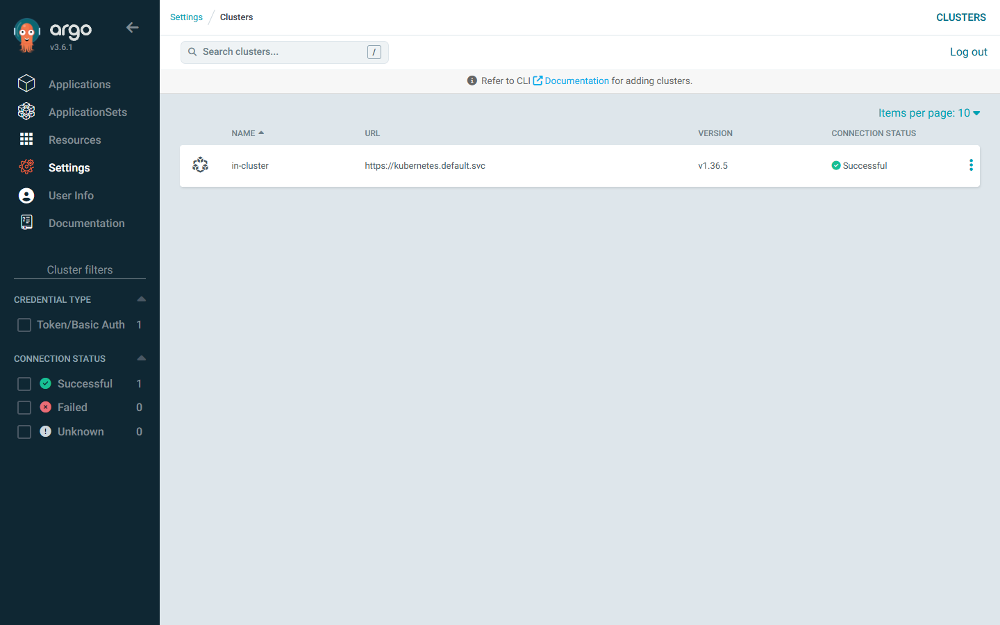
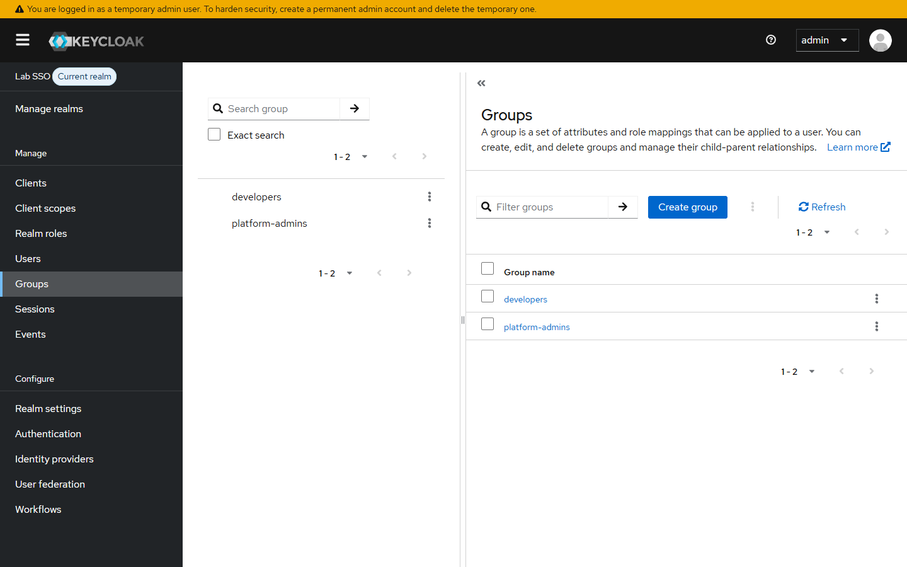
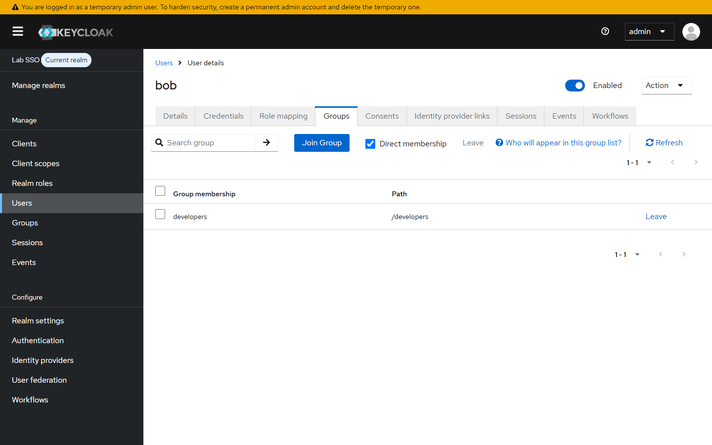

Single sign-on is the easy half. The half that decides whether SSO is safe is what happens after the identity provider says yes: which Argo CD permissions the token actually buys. This lab wires Argo CD to Keycloak, maps a Keycloak group to an Argo CD role, and then proves the difference between an admin and a developer in the running UI.
Everything below ran on a four-node k3s cluster (one server, three agents) running as Hyper-V VMs on a Windows machine. Argo CD and Keycloak both live in that cluster, behind the Traefik ingress that ships with k3s.
What gets built
| Component | Version | Where |
|---|---|---|
| Kubernetes | k3s v1.36.5+k3s1 |
4 nodes, 10.10.10.11–10.10.10.14 |
| Keycloak | quay.io/keycloak/keycloak:26.8.2 |
namespace keycloak |
| Keycloak database | postgres:16-alpine |
Longhorn PVC, 2 GiB |
| Argo CD | chart 10.17.2, app v3.6.1 |
namespace argocd |
| Ingress | Traefik (k3s built-in) | keycloak.10.10.10.11.nip.io, argocd.10.10.10.11.nip.io |
| Identity | realm lab, client argocd, groups platform-admins and developers |
Keycloak |
nip.io is used purely so the hostnames resolve to the lab node without editing a hosts file. keycloak.10.10.10.11.nip.io resolves to 10.10.10.11 from inside the cluster and from the Windows browser, which matters: Argo CD has to fetch the OIDC discovery document from the same issuer URL the browser is sent to.
Authentication is not authorization
Three separate things are happening, and mixing them up is how SSO deployments end up with everyone as an admin.
- Keycloak authenticates the human and issues an ID token.
- The token carries a
groupsclaim, because the client has a group membership mapper. - Argo CD reads that claim and maps group names to RBAC roles. Nothing else grants access, because the default policy is deny.
If step 3 is missing you get "login works, but everyone sees everything" — Keycloak was configured correctly and Argo CD was left wide open. Most of the configuration below exists to make step 3 explicit.

Prerequisites
- A k3s cluster you can reach from Windows. This lab uses
C:\Users\C\.kube\k3s-lab.yaml. kubectland Helm 4 on the Windows host.- A default StorageClass that actually provisions. Longhorn is used here; see the first trap below.
- One spare IP that both pods and the browser can reach. The node address is used, not
127.0.0.1, because127.0.0.1inside a pod is the pod.
kubectl --kubeconfig C:\Users\C\.kube\k3s-lab.yaml get nodes
NAME STATUS ROLES AGE VERSION
k3s-agent-0 Ready <none> 6h v1.36.5+k3s1
k3s-agent-1 Ready <none> 6h v1.36.5+k3s1
k3s-agent-2 Ready <none> 6h v1.36.5+k3s1
k3s-server Ready control-plane 6h v1.36.5+k3s1
Trap 1: two default StorageClasses
Before deploying anything, look at the storage classes. This cluster had both local-path and longhorn marked as default, which is legal but ambiguous, and the PVC in this lab would have raced between provisioners.
kubectl --kubeconfig C:\Users\C\.kube\k3s-lab.yaml get sc -o jsonpath="{range .items[*]}{.metadata.name}{' '}{.metadata.annotations.storageclass\.kubernetes\.io/is-default-class}{'\n'}{end}"
local-path true
longhorn true
longhorn-static
Pick one. Longhorn is the only class that gives a replicated volume, so local-path stops being the default:
kubectl --kubeconfig C:\Users\C\.kube\k3s-lab.yaml patch sc local-path `
-p '{"metadata":{"annotations":{"storageclass.kubernetes.io/is-default-class":"false"}}}' --type merge
Leaving both in place is a slow-burning problem: it works until a PVC lands on the class you did not intend, and then a node reboot takes the data with it.
Step 1: PostgreSQL for Keycloak
Keycloak 26 no longer supports the embedded H2 database for anything you want to keep. A single Postgres instance with a Longhorn volume is enough for a lab, and it is the piece that later becomes an operator-managed HA cluster in production.
apiVersion: apps/v1
kind: Deployment
metadata:
name: keycloak-db
namespace: keycloak
spec:
replicas: 1
strategy:
type: Recreate
selector:
matchLabels: {app: keycloak-db}
template:
metadata:
labels: {app: keycloak-db}
spec:
containers:
- name: postgres
image: postgres:16-alpine
envFrom:
- secretRef: {name: keycloak-db}
env:
- name: PGDATA
value: /var/lib/postgresql/data/pgdata
volumeMounts:
- name: data
mountPath: /var/lib/postgresql
volumes:
- name: data
persistentVolumeClaim:
claimName: keycloak-db
---
apiVersion: v1
kind: PersistentVolumeClaim
metadata:
name: keycloak-db
namespace: keycloak
spec:
storageClassName: longhorn
accessModes: [ReadWriteOnce]
resources:
requests:
storage: 2Gi
The PGDATA indirection is not cosmetic. See trap 2.
Trap 2: Longhorn volumes are not empty
The first Postgres start failed with a message that looks like a corrupted volume:
initdb: error: directory "/var/lib/postgresql/data" exists but is not empty
initdb: detail: It contains a lost+found directory, perhaps due to it being a mount point.
Longhorn formats its volume with an ext4 filesystem, and ext4 always creates lost+found at the root. Postgres refuses to initialise into a non-empty directory. Mounting the claim one level up and pointing PGDATA at a subdirectory solves it without touching the volume:
env:
- name: PGDATA
value: /var/lib/postgresql/data/pgdata
volumeMounts:
- name: data
mountPath: /var/lib/postgresql
After that the pod is 1/1 and the PVC is Bound.
Step 2: Keycloak
Keycloak 26 also renamed the bootstrap variables. KEYCLOAK_ADMIN and KEYCLOAK_ADMIN_PASSWORD are gone; the temporary admin is created from KC_BOOTSTRAP_ADMIN_USERNAME and KC_BOOTSTRAP_ADMIN_PASSWORD, and only on the very first start against an empty database.
spec:
containers:
- name: keycloak
image: quay.io/keycloak/keycloak:26.8.2
args: ["start", "--import-realm"]
env:
- {name: KC_DB, value: postgres}
- {name: KC_DB_URL, value: jdbc:postgresql://keycloak-db:5432/keycloak}
- name: KC_DB_USERNAME
valueFrom: {secretKeyRef: {name: keycloak-db, key: POSTGRES_USER}}
- name: KC_DB_PASSWORD
valueFrom: {secretKeyRef: {name: keycloak-db, key: POSTGRES_PASSWORD}}
- {name: KC_HOSTNAME, value: "https://keycloak.10.10.10.11.nip.io"}
- {name: KC_HTTP_ENABLED, value: "true"}
- {name: KC_PROXY_HEADERS, value: xforwarded}
- {name: KC_HEALTH_ENABLED, value: "true"}
- name: KC_BOOTSTRAP_ADMIN_PASSWORD
valueFrom: {secretKeyRef: {name: keycloak-admin, key: password}}
Two details matter more than they look.
KC_HOSTNAME is the public URL. Keycloak puts it in the discovery document, and both the browser and the Argo CD server must be able to reach it. That is why the issuer is the nip.io name rather than a service name.
KC_PROXY_HEADERS=xforwarded tells Keycloak to trust X-Forwarded-* from Traefik. Without it the redirect URIs and cookies are generated for the wrong scheme, and the login loop never ends.
The realm is imported from a mounted ConfigMap on start, so the client, groups and users exist before anyone logs in.
- name: realm-import
mountPath: /opt/keycloak/data/import
readOnly: true
args: ["start", "--import-realm"]
The import file defines the realm lab, its two groups, two users, and one confidential client:
{
"realm": "lab",
"groups": [{ "name": "platform-admins" }, { "name": "developers" }],
"clients": [{
"clientId": "argocd",
"publicClient": false,
"standardFlowEnabled": true,
"redirectUris": ["https://argocd.10.10.10.11.nip.io/auth/callback"],
"attributes": { "pkce.code.challenge.method": "S256" },
"protocolMappers": [{
"name": "groups",
"protocolMapper": "oidc-group-membership-mapper",
"config": {
"claim.name": "groups",
"full.path": "false",
"id.token.claim": "true",
"userinfo.token.claim": "true"
}
}]
}]
}
full.path: false is deliberate. Keycloak can emit either developers or /developers depending on that flag, and the Argo CD RBAC file has to match the exact string. Pick one and keep it consistent; mismatches here produce "user logged in but has no permissions", which is a miserable thing to debug from the UI.

The client is confidential, so it gets a generated secret. That secret is stored in a Kubernetes secret and never in the article or the Git repository.
Step 3: install Argo CD with OIDC and RBAC
Dex is disabled on purpose. Argo CD ships with Dex as a local identity broker, but there is no reason to run two identity layers when Keycloak is already the source of truth.
dex:
enabled: false
configs:
params:
server.insecure: true
cm:
url: https://argocd.10.10.10.11.nip.io
oidc.tls.insecure.skip.verify: "true"
oidc.config: |
name: Keycloak
issuer: https://keycloak.10.10.10.11.nip.io/realms/lab
clientID: argocd
clientSecret: $oidc.keycloak.clientSecret
enablePKCEAuthentication: true
requestedScopes:
- openid
- profile
- email
requestedIDTokenClaims:
groups:
essential: true
rbac:
policy.default: ""
policy.csv: |
g, platform-admins, role:admin
p, role:developer, applications, get, */*, allow
p, role:developer, applications, sync, */*, allow
p, role:developer, applications, action/*, */*, allow
p, role:developer, logs, get, */*, allow
p, role:developer, projects, get, *, allow
g, developers, role:developer
Four lines in that file carry the whole security model.
server.insecure: true means the Argo CD server speaks plain HTTP and Traefik terminates TLS. That is the standard ingress pattern; the alternative is TLS passthrough, which makes every route harder to reason about.
oidc.tls.insecure.skip.verify exists because the lab uses the self-signed certificate that k3s generates for Traefik. It is a lab-only line. In production you install a real certificate and delete it.
policy.default: "" means deny. Argo CD's chart default is closer to role:readonly, and with that default a user with no group mapping still logs in and can browse Settings. Starting from deny makes every permission visible in the policy file, which is the only way to audit it later.
requestedIDTokenClaims marks groups as essential. If Keycloak ever stops sending the claim, Argo CD refuses the login instead of silently issuing a token with no groups. A silent failure here looks like "SSO is broken for some users" and is much harder to spot.
Apply it with the pinned chart version:
$env:KUBECONFIG = "C:\Users\C\.kube\k3s-lab.yaml"
helm upgrade --install argocd argo/argo-cd --version 10.17.2 `
--namespace argocd --create-namespace `
-f argocd-values.yaml --wait --timeout 12m
Step 4: connect the client secret
The $oidc.keycloak.clientSecret reference is resolved from the argocd-secret Secret, not from the values file. That keeps the secret out of Helm and out of Git.
kubectl -n argocd patch secret argocd-secret --type merge `
--patch-file oidc-secret-patch.json
kubectl -n argocd rollout restart deploy/argocd-server
Verify that Argo CD actually parsed the OIDC block before touching the browser:
curl.exe -k https://argocd.10.10.10.11.nip.io/api/v1/settings
{
"url": "https://argocd.10.10.10.11.nip.io",
"oidcConfig": {
"name": "Keycloak",
"issuer": "https://keycloak.10.10.10.11.nip.io/realms/lab",
"clientID": "argocd",
"scopes": ["openid", "profile", "email"],
"idTokenClaims": { "groups": { "essential": true } },
"enablePKCEAuthentication": true
}
}
If this response has no oidcConfig, the UI will show only the local admin login and no amount of Keycloak debugging will help.
Step 5: log in as a developer
Bob is a member of developers. He clicks the Keycloak button, gets redirected to the realm login page, and comes back with a session.

Argo CD shows the applications he is allowed to see, and nothing about them is admin-only:

The decisive artifact is the User Info page. It shows the username, the issuer, and the claim Argo CD used to pick the role:

That single word, developers, is the entire link between Keycloak and the RBAC file. If it reads /developers here and developers in policy.csv, the mapping fails and the user lands with no permissions.
Step 6: prove the developer can deploy
Permission that is only visible in a config file is a claim. The app below was synced by the developer account, not by the admin, and Argo CD reports the real result:

kubectl -n argocd get applications
kubectl -n guestbook get pods
NAME SYNC STATUS HEALTH STATUS
guestbook Synced Healthy
NAME READY STATUS RESTARTS AGE
guestbook-ui-5d6468fd55-pmpjm 1/1 Running 0 7m
Step 7: prove the admin boundary is real
Alice is in platform-admins, which maps to the built-in role:admin. The difference that matters is not the applications list, it is Settings. An admin can see the cluster connection used for deployments:

Bob's token never grants clusters or repositories, so those Settings pages return empty lists rather than data. The permission is enforced server-side by the API, not by hiding a menu item; hiding the button would be cosmetic.
The two groups in Keycloak are the whole authorization surface:


The four failures worth knowing about
PKCE was enforced by Keycloak but not requested by Argo CD. The first login attempt came back to Argo CD with Missing parameter: code_challenge_method. The documented switch is not the one that exists in v3.6: enablePKCE: true is ignored, and the field that works is enablePKCEAuthentication: true. Reading util/oidc/oidc.go at the release tag is what settled it. After the fix the authorization request contains code_challenge_method=S256.
The self-signed certificate breaks the issuer check. Argo CD validates the issuer over TLS, and the k3s Traefik certificate is not trusted. oidc.tls.insecure.skip.verify: "true" is the lab answer. The browser also needs a one-time bypass for both hosts.
The admin console is not realm-aware by URL alone. #/lab/clients in the master console still renders master's clients. The reliable path is Manage realms → lab, or /admin/lab/console/ after authenticating against master. The first attempt captured the wrong realm's client list, which is exactly the kind of error that produces a blog post full of screenshots of the wrong thing.
role:readonly as the default quietly grants Settings. With the chart default, a user with no matching group still reached Settings → Repositories. It was not a permission escalation to data, but it made the demo meaningless and would confuse a real audit. Deny-by-default plus explicit grants fixed both.
Two smaller realities: the Keycloak and Argo CD images took several minutes to pull on this lab, and Keycloak's first start spends about 90 seconds rebuilding its Quarkus image before the health endpoint reports ready. Neither is a misconfiguration; a startup probe with a generous budget avoids a restart loop.
What this lab proves and what it does not
Proved here: a real OIDC authorization code flow with PKCE, a signed token carrying a group claim, server-side RBAC enforcement, and a working sync performed by a non-admin identity.
Not proved here: TLS trust. The self-signed certificate with verification disabled would be unacceptable outside a lab, and it is the first thing to replace. Also not proved: Keycloak availability. One replica with one Postgres pod is a single point of failure for the entire login path; if Keycloak is down, nobody can authenticate to Argo CD, including local admins if the local admin password was disabled.
Production checklist
- Replace the Traefik default certificate with one issued by a trusted CA and remove
oidc.tls.insecure.skip.verify. - Run Keycloak with at least two replicas and a managed or operator-managed Postgres with backups. Export the realm on every change; the realm is configuration, and configuration that only exists inside a running pod is a future outage.
- Delete the temporary bootstrap admin and create a permanent one, or federate the admin console to the same IdP with a separate admin group.
- Turn off
directAccessGrantsEnabledon the Argo CD client once no CLI password flow is needed. - Scope the developer role with Argo CD Projects instead of
*/*, so a team can only sync into its own project and namespace. - Rotate the client secret on a schedule and keep the patch file out of the repository.
- Decide whether the group claim should be realm roles rather than group paths. Roles survive reorganising group hierarchies; paths do not.
- Audit the RBAC CSV in Git, because
policy.default: ""is only as good as the grants written next to it.
Troubleshooting
| Symptom | Cause | Fix |
|---|---|---|
| Login page has no Keycloak button | argocd-cm has no oidc.config, or the server was not restarted after the secret patch |
Check /api/v1/settings, restart argocd-server |
Missing parameter: code_challenge_method |
Keycloak client requires PKCE, Argo CD does not send it | enablePKCEAuthentication: true |
failed to verify ID token: x509: certificate signed by unknown authority |
Self-signed issuer certificate | oidc.tls.insecure.skip.verify: "true" in a lab; real CA in production |
| Login succeeds, user sees nothing | Group claim and RBAC string do not match | Compare User Info page with policy.csv |
invalid_redirect_uri |
Redirect URI in Keycloak does not match url + /auth/callback exactly |
Fix the client, including scheme and port |
Postgres restarts with directory ... is not empty |
Longhorn lost+found at the volume root |
Mount one level up and set PGDATA |
Cleanup
helm -n argocd uninstall argocd
kubectl delete namespace argocd keycloak guestbook --ignore-not-found
The Longhorn volumes created for Keycloak and the guestbook PVCs are deleted with their namespaces. Removing the namespace also removes the Keycloak database, so export the realm first if you intend to rebuild it.
Takeaways
SSO moves the password prompt out of Argo CD and into an identity provider. It does not move the authorization decision: that stays in Argo CD, and it is only as precise as the group claim and the policy file. The two settings that decide whether this works are both easy to get wrong in opposite directions — a default that grants too much, and a claim name that matches nothing. Deny by default, make the claim essential, and prove the boundary with a second user rather than trusting the YAML.